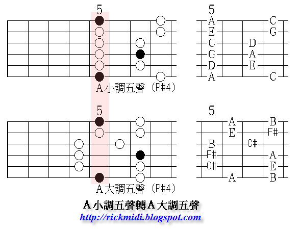
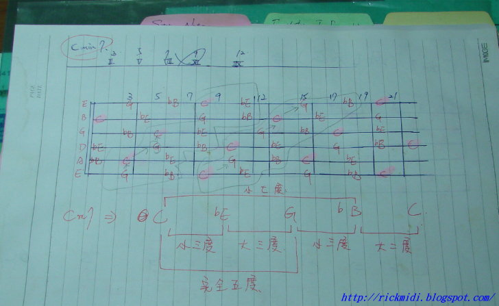

吉他音階學習摘要
發布日期：2010-08-07
自然大調音階
吉他的大調音階在教學上常會介紹五個指型, 每一個指型以四 ~ 五個把位 (橫向), 跨六根弦 (縱向)為基本概念, 食指所在位置稱為把位 (Position). 為了方便記憶, 五個指型均參考 C 大調音階, 唱名, 或者開放和弦指型來定義名稱. 目前坊間教學名稱的命名法不一, 常見的大概有以下三種:
MI 系統: Pattern 1 ~ 5 (簡寫成 P#1 ~ P#5 or P1 ~ P5)唱名系統: Mi, Sol, La, Ti, Re和弦指型系統: C, A, G, E, D
| 系統名稱 | 指型一 | 指型二 | 指型三 | 指型四 | 指型五 |
|---|---|---|---|---|---|
| MI 系統 | P#1 | P#2 | P#3 | P#4 | P#5 |
| 唱名系統 | Mi | Sol | La | Ti | Re |
| 和弦指型系統 | C | A | G | E | D |
| 把位 (Position, C 大調) | 0/12 | 2/3 | 5/4 | 7 | 9/10 |

上圖為 C 大調音階, 也是最重要的音階. 圖中間就是五個指型, 分別有三種市面上常見的教學命名系統: MI 系統, 唱名系統, 和弦指型系統.
- MI 系統是倚賴根音位置/音程關係來聯想, 對於日後學習其他各類型音階很有幫助, 但是初學者不容易了解他的含意
- 唱名系統是參考大調音階和吉他一六弦的位置聯想, 容易明白.
- CGDAE 是參考開放和弦指型聯想, 彈木吉他的人可能會比較熟悉這個系統.
這種名稱, 不用刻意去記, 只要選自己習慣的來稱呼就好. 至於哪個好哪個不好, 教學上我個人偏好先用唱名系統 -> CGDAE -> MI 系統. 由淺致深.
本文提及時會三個名稱同時附上, 讓讀者容易了解.
這五個音階指型主要目的是在幫整個音階把位做格式化 (Format), 其中各個指型框起來的部分, 像是 P#1 (Mi, C) 第 0 把位, P#3 (La, G) 第 5 把位, 他們都是代表食指位置. 有些指型的把位固定在同一格, 但有些會跨兩格. 學習時一般建議先練習 P#1 和 P#3, 因為這兩個把位位置比較固定, 容易記憶.
格式化音階的主要目的就是讓演奏者在彈奏時, 左手可以有比較一致性的指法, 而不是毫無章法. 當左手移動時, 就是以各個音階指型的把位位置作參考點, 這樣移動位置時, 只要食指位置確定了, 其他音用什麼指頭也就確定了.
上述的五個指型練習時, 都要掌握基本的原則是:
- 指型的根音 (Do) 在哪? 上圖的是 C 大調, 也就是指板上的 C 在哪裡?
- 自然大調音階的音程關係: 全全半全全全半
- 吉他的空弦音是啥? 那第十二把位呢?
接下來的聯想應用:
- 六根弦 1, 6 弦同一格音是一樣的.
- 和根音同樣一格, 往上一弦為五度音, 往下一弦為四度音. 例如 C 在第五弦第三格 (5,3) , 同一格, 第六弦第三格 (6, 3) 為 C 五度音, 第四弦第三格 (4, 3) 為 C 的四度音. 但這個規則根音在第二弦不適用.
- 八度音參考 CGDAE 五個和絃指型記憶.
- 採譜 (抓歌) 時, 注意半音的位置, 因為只要發現有半音, 往往現在指型就呼之欲出, 指型知道, 根音就知道, Key 就知道了.
- 除了根音, 接下來可以選擇把 La 的位置記住, 特別是想彈 Rock/Metal 的話.
建議的記憶音階方式:
- 彈你喜歡的歌
- 彈你喜歡的歌
- 還是你喜歡的彈歌 (很重要，要說三次)
坊間的音樂教本 (不管是吉他還是五線譜), 很多都會有簡譜 (能看五線譜就看五線譜), 找喜歡的曲子, 跟著譜彈. 這個部分是幫助記憶音階指型, 或者像 “吉他手如何練習音感” 所描述, 利用 “抓歌” 的方式來記憶音階.
另外 “彈歌” 的意思是, 要深入的彈好一首完整的歌. 把一首歌練到完美 (錄下來像 CD 那樣), 即使花了一年的時間只練那一首歌. “深入的彈” 意思是說, 要很清楚的知道自己正在彈什麼音, 現在在第幾小節, 和弦是什麼, 現在彈的音應該強還是弱, 用到的吉他音階把位是哪些, 這時候其他樂器正在彈什麼, 鼓有沒有過門, Bass 彈哪些音 …. 等. 當你練到這樣的程度的時候, 基本上這首歌已經融入你的身體裡了, 想忘都忘不了了. 這才叫做練好.
更多怎樣練一首歌的細節請參考 “練習的層次”, “如何練一首歌” 的說明.
在吉他的學習路上, 上述五個指型是常見的第一階段學習.
老問題來了: 有沒有必要全部都熟記? 屬於休閒性質的朋友, 把其中兩個 P1, P3 / Mi, La 型 / C, G 型熟練, 搭配 “吉他基本功” 提及的五字絕技巧, 實際上就能彈很多東西了. 如果自認為是嚴肅/認真/有心當個專職音樂人的學習者, 問這問題表示你的決心還不夠.
五聲音階
第二階段的學習, 我個人覺得要學習的是五聲音階 (大小調五聲都要), 這個階段和上面的一樣, 也會有五個指型, 但是不同於上述的, 這五個我個人覺得實用性會大過自然大調的五個指型. 所以建議多花一點時間練習五聲音階的各種常見的模進 (Sequence, 參考 “吉他基本功” 的描述.).
讀者可以自行拿紙筆作一下, 把大調音階圖畫出來, 然後把 Fa, Ti 拿掉, 就會得到五聲音階了. 大概會長的像下圖:

學習的途徑也是和大調音階一樣, 先練習 P#3 / La / G, 和 P#1 / Mi / C. 因為這兩個最好彈, 最好記, 也最常出現. 我常鼓勵同學 “亂彈” 五聲音階, 因為五聲音階即使亂彈也會像 “歌”, 想創作可以從這裡下手.
五聲音階練習方法和大調音階練習方法都類似, 也可以參考 “吉他基本功” 的描述. 很多吉他 Solo Line, 都會以五聲音階為基礎和延伸, 例如 “五聲音階與調式音階關係” 的應用. 所以五聲音階對於吉他手來講非常非常非常非常非常非常非常重要, 一定要熟練, 因為:
大小調指型與思考方式
關係調: 像是 C 大調和 A 小調. 這比較容易, 如大調音階的描述, 只要知道大調的 La 在哪, 就可以找到對應的關係小調. 至於小調音階唱名的問題: 從 Do 開始唱, 還是從 La 開始唱, 初學者請先從 La 開始來熟悉小調這組音階, 日後對於音程有更深入的體會時, 再來用 Do 開始唱小調. 詳細說明請參考 “固定唱名? 首調唱名?”, “關於唱名”, 小調音階相關請參考 “小調音階” 的說明.
平行調: 另外吉他手只要彈和 Blues 有關的音樂 (Rock / Metal / Jazz / Funk / R&B …. 幾乎就是全部 XD), 就會扯到平行調, 像是 A 大調和 A 小調. 這種透過指形轉換來達到平行調效果, 基本的思考有以下兩種:
間接指型: 把位平移, 也就是利用相同音階指型, 但是不同根音的特性來彈奏, 如下圖:

彈的時候思考的就是用固定的音階指型, 然後改變把位位置 + 根音. 這在藍調搖滾 (Blues Rock), 流行歌的 Bridge (有吉他 Solo 的地方) 很常出現. 這個方式彈奏上也比較容易.
直接指型: 同一個把位, 但是不同指型直接轉換.

同樣的, 這種在藍調裡很常出現, 但是和第一種直接平移的想法, 就比較不容易熟悉.
不管是直接還是間接, 實際上都是在把位, 根音, 指型做選擇. 所以把前面的大調音階指型, 和五聲音階指型練熟是非常重要的. 這些的練習方式 “吉他基本功” 都有相關說明.
總結
這麼多音階指型, 光記憶可能就要花不少時間了, 但是這篇的目的只是把最常見的學習的路徑, 方式作整理, 簡單說也只是個目錄, 同時也是音階的基本功.
上述的 “學習方式” 是我個人建議的學習路徑, 其他進階的音階資訊可以參考 “音階學習地圖”, “音階基礎” 的列表.
現在網路資訊發達, 很多同學很容易取得各式各樣的訊息, 因此很多同學都很喜歡問像是: 調式音階, 和聲小調, 民俗音階 … 是什麼東西? 怎麼用? 怎麼記? 每次同學問這樣的問題, 我會這樣想:
那些音階可以去研究, 但是要比較著重用 “歌” 去記那些東西, 音樂還是要用聽的來驗證. 例如有什麼歌用到了 Mixolydian? 五聲音階有什麼歌? 和聲小調有啥曲風會出現? 這些在彈歌的過程中都可以得到驗證.
大家一定都聽過: 游泳教練作再多的教學, 說明, 都不如把你直接丟到水裡直接游來的感受深刻.
另外就是沒有必要去把 “音階基礎” 提及的音階都背下來? 實際上你要是突然問我阿拉伯音階是啥, 吉普賽音階是啥? 我也答不出來. 因為我並沒有在玩那樣的音樂. 大部分的學習都是學習最有用的, 最常用的. 然後再以這些基礎的音階 (自然大小調, 五聲音階) 作延伸, 學習其他更進階的, 像調式, 和聲旋律小調, 小調調式, 爵士小調 … etc..
而 “民俗音階” 則因人而異, 依照需求再額外研究學習. 喜歡日本民俗音樂, 可以去研究日本民俗調式, 喜歡熱情的西班牙, 中東音樂, 印度音樂, 則就去研究他們的民俗樂器和用法.
就像學英文不需要去背字典, 先把常用的熟練, 剩下的有需要再去學習. 專注於工程領域的, 就會去額外學科學用字; 專注於醫學, 就會去記很多醫學領域的字彙 … etc.
但是如果基本的大小調音階, 五聲音階都不夠熟練, 就去學一大堆調式, 一大堆民俗音階, 那指會把自己弄得越來越頭昏, 最後連自己都不知道在彈什麼東西, 那就很可惜了.
比喻、聯想、組織
如果你家的一層樓有 1000 坪, 那麼你一定會想把他分割成幾個房間, 然後每一間用途不一樣, 然後就可以擅用這些空間了. 另外一個概念就是電腦硬碟的格式化, 目錄分類, 也是一樣的.
想像如果吉他有一百格, 你要怎麼記? 所以要有方法, 上述指型是一般比較中規中矩的, 常見的. 實際上一些吉他手都有自己的音階記憶方式. 像是手大一點的老外就會喜好跨多格的記憶方式. 像著名的吉他手 Marty Friedman 的音階就跟上述的很不一樣.
本文提到的五個音階指型, 都是縱向思考, 玩速彈的吉他手, 則會有橫向的音階思考, 簡單說就是所謂的一弦三音的模式, 甚至一弦四音. 一弦三音適合手大的西方人, 東方人手可能沒那麼大 (還是可以訓練), 所以要花更多時間練習.
但是不管什麼樣的記憶方式, 目的都是一樣: 幫學習者格式化 (Format) 吉他的指版, 小段的記憶, 最後串起來才能夠活用.
所以類似的樂器, 像烏克麗麗 (Ukulele), 用同樣的邏輯, 就很容易學習了.
不管是音階還是和弦, 鼓勵同學學習的過程作一些簡單的想像, 手邊沒吉他的時候, 拿起紙筆塗鴉, 天馬行空, 找個人來教. 附上我過去的學習足跡, 或許能夠拋磚引玉 ~

延伸閱讀
站內資料
- 吉他琶音 (Arpeggios) 的練習 - 以 Gmaj7 為例
- 音階的本質
- 音階學習地圖
- 音階基礎
- 吉他基本功
- 調、調式與轉調
- 五聲音階與調式音階的關係
- 吉他手如何練習音感
- 練習的層次
- 如何練一首歌
- 大調音階
更新紀錄
- 原文位址：https://rickmidi.blogspot.com/2010/08/guide-to-guitar-scale-pattern.html
- 2010/08/07: 初版